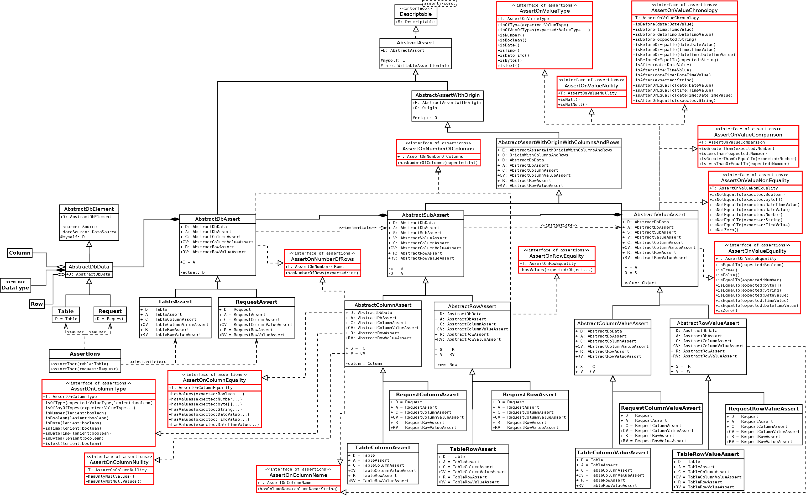

-
Interface Summary Interface Description AssertOnChangeType<T extends AssertOnChangeType<T>> Defines the assertion methods on the type of a change (creation, modification or deletion of a row).AssertOnColumnEquality<T extends AssertOnColumnEquality<T>> Defines the assertion methods on the equality of a column.AssertOnColumnName<T extends AssertOnColumnName<T>> Defines the assertion method on the name of a column.AssertOnColumnNullity<T extends AssertOnColumnNullity<T>> Defines the assertion methods on the nullity of a values of a column.AssertOnColumnOfChangeEquality<T extends AssertOnColumnOfChangeEquality<T>> Defines the assertion methods on the equality of a column of a change.AssertOnColumnType<T extends AssertOnColumnType<T>> Defines the assertion methods on the type of a column.AssertOnDataType<T extends AssertOnDataType<T>> Defines the assertion methods on the type of data (from a table or from a request).AssertOnModifiedColumn<T extends AssertOnModifiedColumn<T>> Defines the assertion methods on a modified column.AssertOnModifiedColumns<T extends AssertOnModifiedColumns<T>> Defines the assertion methods on modified columns.AssertOnNumberOfChanges<T extends AssertOnNumberOfChanges<T>> Defines the assertion method on the number of changes.AssertOnNumberOfColumns<T extends AssertOnNumberOfColumns<T>> Defines the assertion method on the number of columns.AssertOnNumberOfRows<T extends AssertOnNumberOfRows<T>> Defines the assertion method on the number of rows.AssertOnPrimaryKey<T extends AssertOnPrimaryKey<T>> Defines the assertion methods on a primary key.AssertOnRowEquality<T extends AssertOnRowEquality<T>> Defines the assertion method on the equality of a row.AssertOnRowOfChangeExistence<T extends AssertOnRowOfChangeExistence<T>> Defines the assertion method on the existence of a row of a change.AssertOnValueChronology<T extends AssertOnValueChronology<T>> Defines the assertion methods on the chronology of a value.AssertOnValueComparison<T extends AssertOnValueComparison<T>> Defines the assertion methods on comparisons with a value.AssertOnValueEquality<T extends AssertOnValueEquality<T>> Defines the assertion methods on the equality of a value.AssertOnValueNonEquality<T extends AssertOnValueNonEquality<T>> Defines the assertion methods on the non equality of a value.AssertOnValueNullity<T extends AssertOnValueNullity<T>> Defines the assertion methods on the nullity of a value.AssertOnValueType<T extends AssertOnValueType<T>> Defines the assertion methods on the type of a value.
Package org.assertj.db.api.assertions Description
This package contains interfaces that defines the different assertions methods.
These assertion methods defined in the interfaces are implemented in the assertions classes (assertions implementation package).
This diagram shows the part on the tables and requests :

This diagram shows the part on the changes :

- Author:
- Régis Pouiller